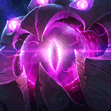
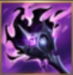
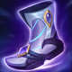
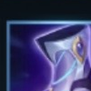

起手裝備
 失落之章
失落之章長距離消耗很吃魔力與技能循環，失落之章最穩定。

Vel'Koz · 超遠距消耗／真傷爆發型法師
威寇茲的 ARAM 核心就是保持距離。用一技分裂角度與二、三技疊被動，等敵人被控或走位受限後再開大，把真實傷害完整灌進去。
本站當時評級理由：威寇茲在 ARAM 幾乎永遠有安全角度丟超遠距技能，狹窄地形也更容易疊滿被動後用大絕掃多人，輸出環境非常理想。
目前未查到 7.2b 對標準 ARAM 的威寇茲專屬追加修正，本站以通用 100% 基準呈現；AAA ARAM 的獨立修正不混入本頁。
長距離消耗很吃魔力與技能循環，失落之章最穩定。

多段技能與長團戰能穩定疊持續傷害，對前排也有價值。
把敵人磨到低血後，無限寶珠能提高大絕與技能收尾能力。
大量 AP 同時提高技能傷害與被動真傷壓力。
除了被動真傷外，其他技能仍需要法穿對抗魔抗。
超遠距技能非常容易觸發，與威寇茲砲台型玩法高度契合。

前期魔力、魔攻與法穿最適合遠程消耗。

升級三級鞋後提高 AP 與法穿，讓大絕前的技能傷害更完整。
射程夠遠，很容易由自己先手命中並把整套傷害轉成額外收益。

三技擊飛與一技緩速後能穩定補傷害。
多段技能連續命中時更容易取得額外收益。

ARAM 助攻密度高，適性能力成長很快。
技能加速能提高整套消耗循環。

沒有位移，閃現是避免被強開的核心保命手段。

被刺客貼到時爭取時間拉開距離或完成反打。
3 技 > 2 技 > 1 技
ARAM 開局三個基礎技能各點 1 級，之後主升 3 技、次升 2 技；大絕能點就點。
先用一技分裂角度與二技清線消耗，三技留給敵人走位受限或想突進時使用。不要為了貪傷害把自己站到前排旁邊。
黑焰火炬與無限寶珠做出後，任何被三技抬起來的目標都可能吃完整一套。大絕最好在對手位移或硬控交掉後再開。
後期射程就是你的防禦。先從最安全的距離把被動疊起來，再開大收割；不必強求打後排，真傷打前排一樣很有效。
群盾陣容會降低消耗效率，需要時可替換無限寶珠。
需要避免被第一個控制命中時補上。
想提高對坦持續燒血能力時可考慮。
獨立歷史資料：7.2b 分類評級。7.3a 僅有部分增幅公告欄位校正，英雄分類適配與出裝未因此全面重評；不套用到標準 ARAM。
看遊戲卡片下方分類 → 點相同分類 → 看左側 S+／S／A。
整套輸出都來自遠距技能，技能命中、冷卻與額外飛彈效果都非常好用。
投射物增傷、投射技能加速與技能暴擊都能直接放大威寇茲的遠距壓力。
多段技能容易連續命中，能快速啟動雷霆系列的額外傷害。
三技能擊飛與一技能緩速能幫助大絕完整輸出，控場增幅具實戰價值。
沒有位移，跑速能改善遠距施法後的調位與防切。
7.2b ARAM S+ 第四批：威寇茲以超遠距消耗、被動真傷與狹窄地形大絕價值列入 S+；AAA ARAM 的獨立調整不混入標準 ARAM。｜v93 7.2d 標準 ARAM 全量校正：已複核 Tier、標準 ARAM 模式修正、7.2c／7.2d 英雄與道具、現行符文名稱及雪球戰車；無額外異動者沿用已驗證配置。